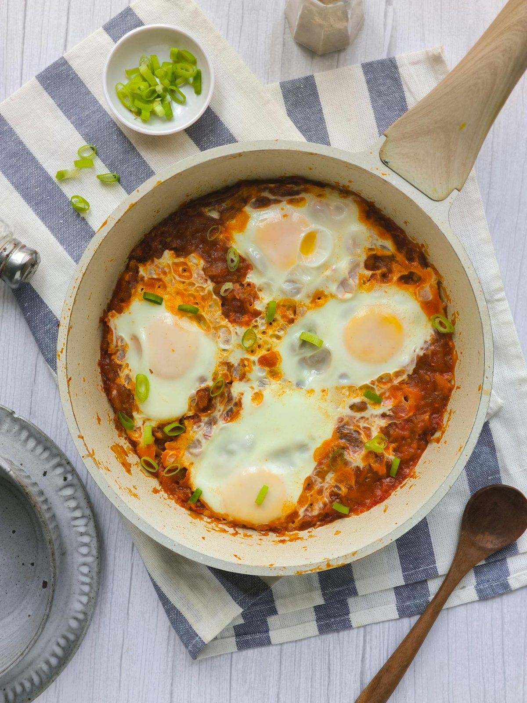

North African · 2026-01-12
Shakshuka

Shakshuka (meaning "a mixture" or "shaken" in Arabic) is a beloved North African dish that originated with the Amazigh (Berber) peoples of Tunisia and spread throughout the Maghreb region. The dish gained international recognition after Maghrebi Jewish immigrants brought it to Israel in the 1950s and 1960s, where it became a national breakfast staple. Today, shakshuka is enjoyed across North Africa, the Middle East, and increasingly worldwide, with each region adding its own variations—from the addition of merguez sausage in Tunisia to feta cheese in modern Israeli versions.
Ingredients
Tomato Base
- 800 g (28 oz / 3½ cups) canned whole peeled tomatoes, crushed by hand
- 60 ml (2 fl oz / ¼ cup) extra virgin olive oil
- 1 large yellow onion, about 200 g (7 oz), diced
- 2 medium red bell peppers, about 300 g (10½ oz) total, seeded and diced
- 4 cloves garlic, minced
- 1 small fresh red chili or jalapeño, seeded and minced (optional, for heat)
Spices
- 10 g (2 tsp) sweet paprika
- 5 g (1 tsp) ground cumin
- 2.5 g (½ tsp) smoked paprika
- 1.25 g (¼ tsp) cayenne pepper (adjust to taste)
- 5 g (1 tsp) granulated sugar
- 5 g (1 tsp) fine sea salt, plus more to taste
- Freshly ground black pepper, to taste
For Finishing
- 6 large eggs, room temperature
- 15 g (½ oz / ¼ cup) fresh flat-leaf parsley, roughly chopped
- 15 g (½ oz / ¼ cup) fresh cilantro, roughly chopped (optional)
- 60 g (2 oz / ¼ cup) crumbled feta cheese (optional)
Substitutions:
- Canned whole tomatoes → Fresh ripe tomatoes (900 g / 2 lb), blanched, peeled, and chopped (flavor may vary by season)
- Red bell pepper → Green bell pepper or roasted jarred peppers (slightly different flavor profile)
- Fresh chili → ½ tsp red pepper flakes (less fresh heat, but convenient)
- Feta cheese → Goat cheese or labneh for a creamier finish
Equipment
- 25-30 cm (10-12 inch) cast iron or oven-safe skillet with lid
- Sharp knife and cutting board
- Wooden spoon or spatula
- Lid or aluminum foil for covering
Instructions
Preparation (Active time: 10 min)
1
Prep the vegetables: Dice the onion into 1 cm (½ inch) pieces. Seed and dice the bell peppers into similar-sized pieces. Mince the garlic and fresh chili if using. You should have uniform pieces that will cook evenly. Set aside in separate bowls.
2
Prepare the tomatoes: Pour the canned tomatoes into a bowl and crush them by hand into rough chunks, keeping some texture. Don't over-process—you want rustic, chunky pieces about 2 cm (¾ inch).
3
Mix the spices: Combine the sweet paprika, cumin, smoked paprika, and cayenne in a small bowl. This spice blend is ready to add all at once.
Cooking (Active time: 20 min)
4
Sauté the aromatics: Heat the olive oil in your skillet over medium heat until shimmering. Add the diced onion and cook, stirring occasionally, for 4-5 minutes until softened and translucent. The edges should just begin to turn golden.
6
Add the peppers: Add the diced bell peppers and cook for another 5-6 minutes, stirring occasionally, until they soften and release their juices. The mixture should be fragrant and slightly caramelized.
7
Bloom the spices: Add the minced garlic and fresh chili (if using) and cook for 30 seconds until fragrant. Clear a small space in the center of the pan, add the spice mixture directly to the hot surface, and stir for 30 seconds. This blooms the spices and releases their essential oils. You'll smell the warm, earthy aroma intensify.
8
Build the sauce: Pour in the crushed tomatoes, sugar, salt, and pepper. Stir well to combine everything. Bring to a gentle simmer and cook uncovered for 10-12 minutes, stirring occasionally. The sauce should thicken noticeably and the oil may start to separate slightly at the edges—this is a sign of a well-developed sauce.
9
!
Shakshuka sauce simmering Alt text: Rich red tomato sauce bubbling gently in cast iron skillet with visible pieces of pepper and onionPoaching the Eggs
10
Create wells for the eggs: Reduce heat to medium-low. Use the back of a spoon to make 6 evenly spaced wells in the sauce, pushing the tomato mixture aside to expose the bottom of the pan slightly.
11
Add the eggs: Crack each egg into a small bowl first, then gently slide one egg into each well. Season the eggs with a small pinch of salt and pepper. The whites should start to set immediately from the heat of the sauce.
12
Cover and poach: Cover the skillet with a lid or aluminum foil. Cook for 5-8 minutes depending on your preference: 5 minutes: Very runny yolks (soft) 6-7 minutes: Jammy yolks (medium, recommended) 8+ minutes: Fully set yolks (hard)
13
Check at 5 minutes—the whites should be completely opaque and set, while the yolks should still jiggle when you gently shake the pan.
Assembly & Finishing
14
Garnish: Remove the lid and scatter the chopped parsley and cilantro over the top. Add crumbled feta cheese if using—it will soften slightly from the residual heat.
15
Serve immediately: Bring the skillet directly to the table. Shakshuka is traditionally served family-style, eaten directly from the pan with crusty bread for scooping.
Food Safety & Storage
- Minimum safe internal temperature: Egg whites should be completely set (opaque white, not translucent). Yolk doneness is personal preference.
- Storage: Refrigerate leftover sauce (without eggs) in an airtight container for up to 4 days. The eggs do not store well—cook fresh eggs when reheating.
- Freezing: The tomato sauce base (before adding eggs) freezes well for up to 3 months. Thaw overnight in refrigerator.
- Reheating: Warm sauce over medium-low heat, then poach fresh eggs directly in the reheated sauce.
Serving Suggestions
- Serve with warm crusty bread, challah, or pita for scooping
- Traditional accompaniments include labne (thick yogurt), hummus, and Israeli salad
- Pairs well with fresh mint tea or strong Turkish coffee
- For a heartier meal, serve alongside feta cheese, olives, and fresh cucumbers
Scaling Notes
Half recipe (½×): Use a smaller 20 cm (8 inch) skillet. Reduce sauce cooking time to 8 minutes as it will thicken faster. Use 3 eggs.
Double recipe (2×): Use a large 35 cm (14 inch) skillet or baking dish. Extend sauce cooking time to 15 minutes. Can also be made in a roasting pan and finished in a 190°C (375°F) oven for 12-15 minutes.
Chef's Notes
- Sourcing: For the best results, use San Marzano or high-quality fire-roasted canned tomatoes. In summer, ripe garden tomatoes are exceptional.
- Make-ahead: The tomato sauce can be prepared up to 3 days ahead and refrigerated. Simply reheat and add eggs when ready to serve.
- Variations: Add merguez sausage (Tunisia), chorizo (Spanish-influenced), or spinach and artichokes (Mediterranean) to the sauce before adding eggs. Green shakshuka made with tomatillos and spinach is a popular modern variation.
- Common pitfalls: Don't rush the sauce—under-cooked sauce will be too watery and the eggs won't poach properly. The sauce should be thick enough to hold the eggs in their wells.
- Heat level: The recipe as written is mild-medium. For authentic North African heat, double the cayenne or add harissa paste to taste.
Nutrition Information (Optional)
Per serving (1/4 of recipe with 1.5 eggs): approximately 285 kcal
- Protein: 14g | Fat: 18g | Carbohydrates: 18g | Fiber: 4g
Version History:
- v1 (2026-01-12): Initial recipe by @flavor_atlas_coordinator
Credits:
- Recipe development: @flavor_atlas_coordinator
- Testing: @flavor_atlas_coordinator
- Verification: @Coordinator
- Photography: Pending
Recipe Location: /Recipes/north-african/north-african_shakshuka_v1.md
Images Location: /Regions/Images/shakshuka/